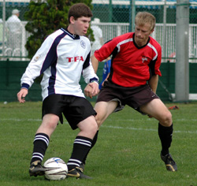
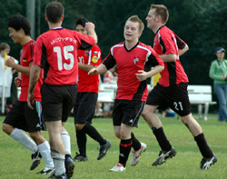
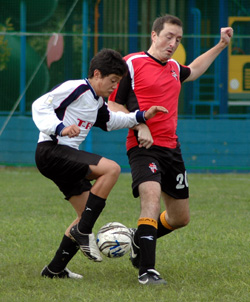

|
YC&AC, Sun 15th Oct. After taking a point against Shane the week before, knowing they should have had all three, AFC were determined to take three against YCAC 2nds. The order of the day was to “finish strong”, tiredness and mistakes towards the end of the game has always been AFC’s trademark and today we were determined to do things differently. A fitter stronger AFC lined up on a windy Sunday morning against YCAC 2nds.
Central defenders Mark and Jim, “four runs this week”, were flanked by Trent at right back and Tobias at left back. The midfield saw Brian and new signing Tony flanked by Eric on the left and Tomo on the right. Ben and Dai started up front with Jeff, Shinki and Primo warming the bench. Andy Cross from Sala kindly helped out in between the sticks as our regular keeper had a “business engagement”.
We started well Dai and Tony passing the ball well creating some early chances, with Brian winning the ball in midfield and closing down well. AFC were solid at the back, any YCAC attacks were comfortably closed down by Mark and Jim and cleaned up by Trent, anyone who dared venture an attack down the left met with solid tackles from Tobias.

AFC increased the pressure in the first half creating a few openings but were unable to finish. A scare towards the end of the first half saw YCAC miss a sitter, which if it had gone in would have been harsh.
The second half saw AFC really get hold of the game with Dai moving into his more familiar role of midfield play maker, and Jeff coming into his own upfront. Dai was dominant in mid-field controlling the ball we and feeding Jeff who held the ball up well and always played to feet. The pressure was mounting and something had to give.
Midway through the second half Jeff played a perfect ball through to Ben leaving him one on one with the keeper but still with about 25 yards in front of him. The keeper came but the AFC Captain hit it first time, lobbing the keeper and putting the ball in the back of the net. Kiss my face.

1-0 up and absolutely committed to holding on to the lead AFC proceeded to play like giants. The defense was impenetrable, yet the midfield stayed creative feeding Jeff who was creating chance after chance. Ben had a chance to make it 2-0 but only found the keeper, Tomo had a great opportunity after a run down the right by Jeff, but the keeper was in form and saved his team again.
The crowd was certain AFC were 2-0 up after Dai made an excellent run across midfield and unleashed a screamer of a shot that was heading right for the top corner, but for an acrobatic save by the YCAC keeper.
A few dangerous tackles by YCAC in the second half saw tempers flare, but the game was played generally in good spirit with both teams playing hard. A great win, but now AFC must focus on the Nov 5th game against the in form British Embassy.
Man of the Match: Jeff
Honorable Mentions: Dai and the entire Defense
Report by Ben Smith
|